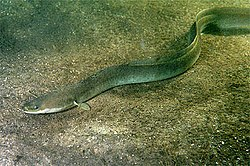

LOBO COMÚN:
| LOBO COMÚN | |||||||||
|---|---|---|---|---|---|---|---|---|---|
|
El lobo (Canis lupus) es una especie de mamífero placentario del orden de los carnívoros. El perro doméstico (Canis lupus familiaris) se considera miembro de la misma especie según distintos indicios, la secuencia del ADN y otros estudios genéticos.2 El primer registro fósil data de hace ochocientos mil años.3 Antaño, los lobos fueron abundantes y se distribuían por Norteamérica y Eurasia. Actualmente, por una serie de razones relacionadas con el hombre, los lobos habitan únicamente en una muy limitada porción del que antes fue su territorio. El término "lobo" deriva del latín lupus, con el mismo significado. En zoología se usa también para definir una especie de pez teleósteo de doce centímetros de largo, un pez selacio de dos metros de longitud, para el mamífero similar a la foca, si se añade el adjetivo "marino", y para el lince, si se añade el adjetivo "cerval". También designa una máquina usada en hilandería para el trabajo del algodón y como sinónimo de embriaguez (en desuso). En Perú se usa como sinónimo de astuto | ||||||||
DATOS CURIOSOS |
Unidos para siempre: Una pareja de lobos usualmente permanece unida por siempre. Si uno de los dos muere, el otro buscará una nueva pareja. | Indomables: Una de las características que distinguen al lobo del perro es que el lobo no aceptará al hombre como su líder ni lo obedecerá. En cambio, los perros pueden considerar a un humano como su líder. | Mala fama: Uno de los mitos más comunes acerca del lobo es que son peligrosos. Pues esto no es cierto. Si bien el lobo es un depredador, es más bien un animal tímido (o desconfiado) que huye del contacto con el humano. Atacará al hombre solo en caso de sentirse amenazado. | Aullido: Algunas personas creen que los lobos aúllan a la luna. En realidad aúllan para comunicarse o simplemente porque les gusta (nadie lo sabe con exactitud). Lo que sí es cierto es que la luz de la luna mejora su visión y les permite tener una mejor caza, por lo que es más común verlos en noches de luna llena. Otras razones por las que los lobos aúllan es para indicar su posición, definir su territorio o para llamar a la manada. | |||||
ANGUILA
Viven en aguas dulces, aguas marinas y aguas salobres. Algunas especies de anguila son catádromas, es decir, emigran para desovar del agua dulce al mar, al revés que el salmón que es anádromo. El caso más llamativo lo representa la anguila europea (Anguilla anguilla), cuyos lugares para el desove están situados en el Mar de los Sargazos, lugar elegido por esta especie para la cría desde hace 140 millones de años. Los ejemplares en la madurez reproductiva (8-10 años en las hembras y 4 en los machos) realizan un recorrido de más de 4.000 km para llegar hasta allí tras unos ocho meses, partiendo de los cauces fluviales de Europa occidental y Norteamérica. Una vez allí, machos y hembras se aparean, desovan y, finalmente, mueren. Todo el proceso se lleva a cabo a unos 500 metros de profundidad y a una temperatura de 15 °C. Los huevos depositados eclosionan a los pocos días, naciendo de estos los llamados leptocéfalos, de un tamaño inferior a la cabeza de un alfiler. Inmediatamente después del nacimiento, movidos más por las corriente del Golfo que por sus propios medios, los individuos inician la asombrosa migración de vuelta hasta los cauces fluviales desde donde partieron sus madres. Durante dicha migración muere gran cantidad de individuos, pero las puestas son mucho más numerosas, permitiendo de este modo el reemplazo generacional (9.000.000 de huevos por hembra). Tras un plazo de dos a cuatro años llegan a la desembocadura de los cauces, y al contacto con el agua menos salina, sufren una metamorfosis que los transforma en anguilas. La salinidad del agua juega posteriormente otro papel crucial en su desarrollo, ya que determina el sexo de cada individuo. Es por ello que únicamente son hembras los individuos que remontan los cauces fluviales, permaneciendo en zonas aledañas a la desembocadura (más salinas)los machos. Entre cauces, acequias y pozos transcurre la vida de la angula mientras crece, madura y se transforma en la anguila.